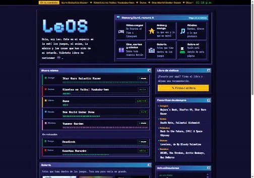

*** DEBUG MENU ***
FLAGS
Se guardan en tu navegador y afectan todo el sitio.
LOGROS
CONTENIDO CORTADO

- font_VT323 · la letra de terminal de la versión 2001. Cortada: la reemplazó Tahoma.
- ahora_mismo · la lista de lo que estaba viendo iba en la portada. Se mudó a Sobre mí.
- blinkie_rosa · el de "pixel art" era rosa con corazones. Ahora usa los colores de la Game Boy Color.